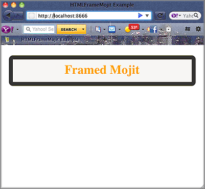

Time Estimate: 15 minutes
Difficulty Level: Intermediate
This example shows how to use the HTML Frame Mojit ( HTMLFrameMojit) to create the skeleton of an HTML page and embed rendered view template into the page. The HTMLFrameMojit creates the <html>, <head>, and <body> tags and embeds the rendered view templates of the child mojits into the <body> tag. To be clear, although the name HTMLFrameMojit contains the string “frame”, the HTMLFrameMojit does not create HTML frame or iframe elements. This example only uses one child mojit, but you can configure the application to use many child mojits. For more information, see HTMLFrameMojit.
The following topics will be covered:
The screenshot below shows the page served by your application, where the visible content is created by the child mojit of HTMLFrameMojit.
Tab 2 Selected
The HTMLFrameMojit is a reusable component that is available in every Mojito application. To configure the HTMLFrameMojit, you use the application.json file. In this example application.json, the frame object has a type property that specifies that HTMLFrameMojit create the HTML framework and embed the rendered view from the child mojit.
[
{
"settings": [ "master" ],
"specs": {
"frame" : {
"type" : "HTMLFrameMojit",
"config": {
"title": "HTMLFrameMojit Example",
"child" : {
"type" : "framed"
}
}
}
}
}
]
The Mojito server returns the HTML below to the client. The HTMLFrameMojit is responsible for the tags that comprise the skeleton of the HTML page and inserting the value of the title property in application.json into the <title> element, and the child mojit creates the content that is embedded in the <body> tag. In this example, the child mojit creates the <div> tag and its content.
<!DOCTYPE HTML>
<html>
<head>
<meta name="creator" content="Yahoo! Mojito 0.0.1">
<title>HTMLFrameMojit Example</title>
</head>
<body>
<div id="framed-inst" class="mojit">
<h2 style="
border-style: solid;
border-width: 10px;
border-color: #3D362D;
-webkit-border-radius: 10px;
-moz-border-radius: 10px;
border-radius: 10px;
margin-left: auto;
margin-right: auto;
padding: 10px 0px;
background-color: #F7F6F4;
text-align: center;
font-weight: bold;
font-size:2.0em;
color: #FF9900;
width: 90%;
">Framed Mojit</h2>
</div>
</body>
</html>
The HTMLFrameMojit mojit can be used to allow dynamic run-time selection of running on the client or server. You can also use HTMLFrameMojit to include assets and control language defaults. These subjects are discussed in Internationalizing Your Application.
To set up and run htmlframe_mojit:
Create your application.
$ mojito create app htmlframe_mojit
Change to the application directory.
Create your mojit.
$ mojito create mojit framed
To configure the application to use the HTMLFrameMojit, replace the code in application.json with the following:
[
{
"settings": [ "master" ],
"specs": {
"frame" : {
"type" : "HTMLFrameMojit",
"config": {
"title": "HTMLFrameMojit Example",
"child" : {
"type" : "framed"
}
}
}
}
}
]
To configure routing, create the file routes.json with the following:
[
{
"settings": [ "master" ],
"_framed_view": {
"verbs": ["get"],
"path": "/",
"call": "frame.index"
}
}
]
Change to mojits/framed.
Modify the controller of the framed mojit by replacing the code in controller.server.js with the following:
YUI.add('framed', function(Y,NAME) {
Y.mojito.controllers[NAME] = {
init: function(config) {
this.config = config;
},
index: function(ac) {
ac.done({app_name:'Framed Mojit'});
}
};
}, '0.0.1', {requires: ['mojito']});
Modify the default view template by replacing the code in views/index.mu.html with the following:
<div id="{{mojit_view_id}}" class="mojit">
<h2 style="
border-style: solid;
border-width: 10px;
border-color: #3D362D;
-webkit-border-radius: 10px;
-moz-border-radius: 10px;
border-radius: 10px;
margin-left: auto;
margin-right: auto;
padding: 10px 0px;
background-color: #F7F6F4;
text-align: center;
font-weight: bold;
font-size:2.0em;
color: #FF9900;
width: 90%;
">{{app_name}}</h2>
</div>
The HTML fragment in the view template above will be embedded in the <body> tag by HTMLFrameMojit.
From the application directory, run the server.
$ mojito start
To view your application, go to the URL: